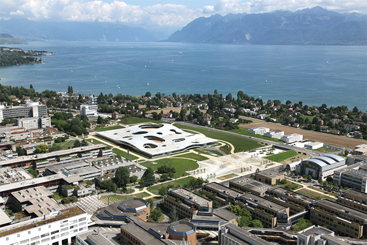
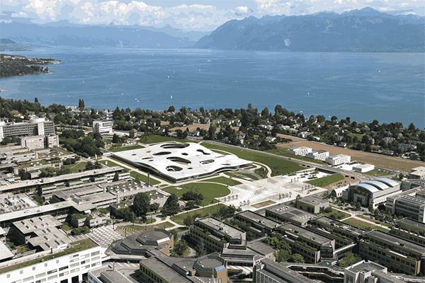

You can find the starting files for this assignment here.
In this assignment, you will implement the K-means algorithm for cluster detection, which is used to partition n vectors into k clusters. Here, vectors are separated into clusters based on their mutual similarity -- vectors that are closer to each other in space are more likely to end up in the same cluster, and the distant vectors are likely to be in different clusters. K-means has many applications: it is used in data mining, image filtering and signal processing.
Here is a simple example -- let's say that we have a set of vectors in 2D space, as shown in the following figure:
As a human, you can visually distinguish the three clusters of points in the image:
When the number of clusters, dimensions and vectors grows, it becomes difficult and even impossible to manually determine the clusters. K-means is a simple algorithm that takes a set of vectors (called points) and outputs as set of clusters as follows:
k points called means. This is called initialization.k clusters of points, and we refer to this process as
classifying the points.k means have significantly changed, go back to step 2.
If they did not, we say that the algorithm converged.k means represent different clusters -- every point is in the cluster
corresponding to the closest mean.Above, two steps need additional discussion.
First, how do we pick the initial k means?
The initialization step can be done in many different ways -- we will just
randomly pick some of the input vectors.
Second, how do we know that the algorithm converged?
We will check that, for each mean, the square distance between the old value of
the mean and the new value of the mean is less than or equal to some value
eta.
For a better illustration, here are a few steps of the K-means algorithm. Initially, we pick a random set of means, shown with "X" in the figure:
Then, we classify the points according to the closest mean ("X"). The means divide the space into regions, where each point is closer to the corresponding mean than any other mean -- in the figure, the dotted line depicts the borders of different regions:
All the points in the same region form one cluster. After having classified the points, we can update the mean values to the average of all the points in the cluster:
Each of the means was significantly updated. This is a good indication that the algorithm did not yet converge, so we repeat the steps again -- we first classify all the points:
And then we update the means again:
One of the means did not change at all in the last step.
Still, other means have changed so we continue this process until the change
in the position of each point drops below the eta value.
At each iteration of K-means, we can associate multiple points to clusters,
and compute the average of the k clusters, in parallel.
Note that the association of a point to its cluster is independent of the
other points in the input, and similarly, the computation of the average of a cluster
is independent of the other clusters.
Once all parallel tasks of the current iteration complete,
the algorithm can proceed to the next iteration.
K-means is an example of a bulk synchronous parallel algorithm (BSP). BSP algorithms are composed from a sequence of supersteps, each of which contains:
Data-parallel programming models are typically a good fit for BSP algorithms, as each bulk synchronous phase can correspond to some number of data-parallel operations.
In the first part of this assignment, you will classify the input points
according to the square distance to the means.
Input points are described with the following Point data-type:
class Point(val x: Double, val y: Double, val z: Double)
You will start by implementing the classify method:
def classify(points: GenSeq[Point], means: GenSeq[Point]): GenMap[Point, GenSeq[Point]]
This method takes a generic sequence of points and a generic sequence of means. It returns a generic map collection, which maps each mean to the sequence of points in the corresponding cluster.
Recall from the lectures that generic collection type,
such as GenSeq or GenMap, can be implemented either
with a parallel or a sequential collection.
This means that the classify method will either run sequentially or in
parallel, depending on the type of the collection that is passed to it,
and returns a sequential or a parallel map, respectively.
The method is oblivious to whether the algorithm is parallel or not.
Hint: Use groupBy and the findClosest method, which is already defined for
you. After that, make sure that all the means are in the GenMap, even if their
sequences are empty.
In the second part of this assignment, you will update the means corresponding to different clusters.
Implement the method update, which takes the map of classified points produced
in the previous step, and the sequence of previous means.
The method returns the new sequence of means:
def update(classified: GenMap[Point, GenSeq[Point]], oldMeans: GenSeq[Point]): GenSeq[Point]
Once more, the method takes and returns generic collections.
Take care to preserve order in the resulting generic sequence -- the mean i in
the resulting sequence must correspond to the mean i from oldMeans.
Hint: Make sure you use the findAverage method that is predefined for you.
Finally, you will implement convergence detection.
The convergence detection method takes a sequence of old
means and the sequence of updated means, and returns a boolean indicating if the
algorithm converged or not.
Given an eta parameter, oldMeans and newMeans, it returns true if the
algorithm converged, and false otherwise:
def converged(eta: Double)(oldMeans: GenSeq[Point], newMeans: GenSeq[Point])
The algorithm converged iff the square distance between the old and the new mean is less
than or equal to eta, for all means.
Note: the means in the two lists are ordered -- the mean at i in oldMeans
is the previous value of the mean at i in newMeans.
Implement converged!
We now have everything we need to run the K-means algorithm. We only need to combine the previously defined methods in the right way.
The tail-recursive kMeans method takes a sequence of
points points, previously computed sequence of means means, and the eta
value:
@tailrec final def kMeans(points: GenSeq[Point], means: GenSeq[Point], eta: Double): GenSeq[Point]
The kMeans method should return the sequence of means,
each corresponding to a specific cluster.
Hint: kMeans implements the steps 2-4 from the K-means pseudocode.
Run the algorithm and report the speedup:
> runMain kmeans.KMeansRunner
And now for the fun part -- the K-means algorithm has a lot of use-cases!
In image processing applications, it can be used to reduce the size of the
color palette, thus compressing the image. This is done by turning a
true color image, where each pixel
is encoded into 32 bits, into indexed color,
where each pixel can be encoded with just a few bits. This is done by using k-means to
"cluster" the important colors in the image, thus reducing its palette from
24-bit (2^24 colors) to just 32 indexed colors, chosen from the 24-bit palette.
Here, pixels from the image are the input vectors,
and their coordinates are the different color channels.
This is the original true color (24-bit) image:

And this is the indexed color (32 colors) version of it:

So, thanks to your k-means implementation, ScalaShop can now compress images! You can start ScalaShop by invoking:
> run-main kmeans.fun.ScalaShop
in sbt.
But before you get to the fun part, you'll need to solve a
mystery: why is ScalaShop so slow?. Have a look at the source code,
in the fun package.
If you can't find it, scroll down for a hint.
Hint 1: look at the top of fun/IndexedColors.scala and see the comment.
Scroll down for another hint.
Hint 2: You should be able to make it almost x times faster, where x
is the number of cores in your computer :)
Scroll down for the final hint.
Hint 3: The two collections could use a .par call, to make them parallel.
After your changes, ScalaShop should be much faster. So, let's play!
The k-means algorithm is very sensitive to the initial choice of means. There are three choice strategies implemented in ScalaShop:
Uniform Choice is the simplest strategy. It chooses n colors uniformly in
the entire color space, regardless of the colors used in the image. If the image
has a dominant color, the means created by this strategy will likely be very far
away from the clusters formed by this dominant color. You can try setting the
Uniform Choice strategy with 1, 10 and 30 steps. You will notice the initial
choice is quite bad, but the quality improves as the k-means algorithm is applied
in more steps.Random Sampling is another simple strategy, but with better results. For the
initial means, it randomly samples n colors from the image. This yields good
results if the image has few dominant colors, but it cannot handle subtle nuances
in the image. Again, if you try this strategy with 1, 10 and 30 k-means iteration
steps, you will notice improvements as the k-means algorithm is ran more.Uniform Random is the most complex strategy to pick means, but it also produces
the best results. It works by uniformly splitting the color space in sub-spaces.
It then counts the number of pixels that have colors belonging to that sub-space.
Based on this number, it chooses a proportional number of means in the sub-space,
by randomly sampling from the pixels in that sub-space. Therefore, if your image
has dominant colors, this strategy will drop a proportional number of means for
each dominant color, thus allowing the k-means algorithm to capture fine nuances.In the EPFL image now available in ScalaShop, the mountains are a good way to see how well each initial choice of means fares. You also have different strategies for deciding convergence:
Steps allows to run a fixed number of steps. After this, the k-means algorithm
is stopped. Eta corresponds to the means stability, as we showed earlier: if the
means did not move much since the last iteration, the result is considered stable.Sound-to-noise ratio is a more refined convergence strategy, which does not settle
for stability but tries to minimize the difference between the true color image
and the index color one. This strategy goes beyond Eta, but high Sound-to-noise
ratios will prevent the k-means algorithm from finishing!With this in mind, enjoy ScalaShop, the ultimate image manipulation tool and the nice, warm, sunny photo of EPFL!